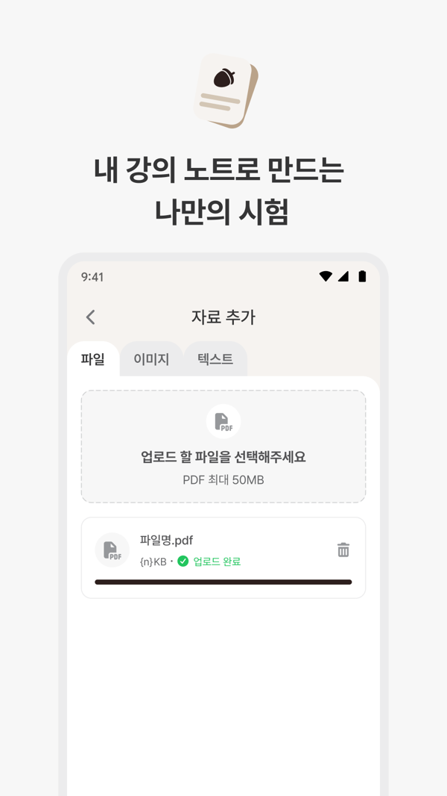

대표 작업
-
 회사 공개 소개 이미지 · 예시 데이터
회사 공개 소개 이미지 · 예시 데이터
급여명세서 서비스 기획
내가 한 일 — 기존 기능은 계산이 맞지 않아 쓰이지 않았습니다. 약 30개 거래처의 기장을 직접 해 보며 계산 규칙과 예외를 정리하고, 급여 유형별 시나리오로 세무 프로그램(위하고) 결과와 계산식을 대조해 Apps Script 기준 코드로 개발팀에 넘겼습니다.
결과: 설명·가이드 전달 후 내부 실제 급여 계산에 사용, 고객 시범 운영 · 구현: 개발팀 · 이미지는 퇴사 후 회사가 게시한 소개 페이지
-
 설명도 · 직접 작성
설명도 · 직접 작성
의약품 도매몰 주문·박스 상태 연동
내가 한 일 — 주문 단위와 박스 단위의 차이를 연결 기준과 상태 정책으로 정리하고, 양쪽 데이터를 대조해 오류 두 가지를 찾아 전달했습니다.
담당자 주문 수기 입력 하루 약 1시간 → 10분(본인 확인 기록)
-

 스토어 소개 이미지 · 팀 결과물
스토어 소개 이미지 · 팀 결과물
퀴켓 — AI 퀴즈 학습 앱
내가 한 일 — PM으로 첫 출시 범위를 MoSCoW로 조율하고, 미니 버전을 직접 만들어 문항 수 기준을 먼저 정했습니다.
App Store 2026.07.10 · Google Play 출시 · 정식 앱 구현: 개발팀
-
 기획 산출물 · 발표자료
기획 산출물 · 발표자료
관계부 — 기능·화면·ERD·API 설계
내가 한 일 — 페인 포인트 4개를 기능 18 · 화면 11 · 테이블 6 · API 33으로 연결하고, Vue 3 화면으로 흐름을 확인했습니다.
전체 프로젝트
카드로 보기- 실무 · 2026.01–02의약품 도매몰 주문·박스 상태 연동API 정의서 검토 · 구현 개발팀운영 적용
- 실무 · 2025.12–2026.05급여명세서 서비스 기획계산 기준·정책·데이터 필드·화면 기획 · 구현 개발팀내부 사용 · 시범 운영
- 실무 · 2026.01–06약국 AI 세무 상담 — 삼일회계법인 협업화면·서비스 정책 · 모델 협력사베타 테스트 단계
- 실무 · 재직 중약국가계부 연결 흐름 개선 · 제휴 사이트 연동연결 흐름·예외 기획운영 적용
- 실무 · 재직 중처방전 보관 서비스 운영 · 스캔센터운영 자동화 기획(구현은 개발팀) · 구현 개발팀현장 운영
- 실무 · 2025–2026그 밖의 기획 — 종합소득세 · 거래처 · 수임예정 고객기획·ERD 검토 · 구현 개발팀기획
- 교육 · 2026.08SKALA증권 세무상담 데스크1인 설계·구현·검증(AI 코딩 도구 활용)교육 실습
- 교육 · 2026.09차량용 교통표지판 인식 모델 경량화경량화 방향 선택교육 과제
- 교육 · 2026.08EDU:UP — 교육복지포인트 플랫폼프론트엔드 · 서버 팀원교육 실습
- 교육 · 2026.09관계부 — 기능·화면·ERD·API 설계1인 설계 + 프론트엔드 프로토타입(목업 API)교육 · 프로토타입
- 팀 · 2026.03–07퀴켓 — AI 퀴즈 학습 앱PM·기획·사용자 테스트 · 구현 개발팀출시 후 운영 중단
- 팀 · 2026.05–06에이링크 — AI 링크·QR 북마크기획 전반 + 프론트엔드 프로토타입 · 서버 팀원프로토타입
- 팀 · 2026.08–09데이콘 블랙박스 대회 — 재촬영 판별 실험 · 라벨링 도구Stage 1 실험 · 서버 팀원대회 종료
- 개인 · 2026.06–진행 중마켓데스크 — AI 리포트 분석·종목 관리1인 기획·AI 활용 구현·화면 검증개인 사용
- 개인 · 2026.06일경험 운영 트리아지 어드민6시간 안에 기획·데모 구현·발표데모
- 개인 · 2026.08ClassTrack — 강의·과제 추적 웹앱1인 설계·구현·배포 실습배포 실습
- 개인 · 2026.05–관계부 — 관계 기록·AI 분석1인 개발개인 사용
- 개인 · 2026개인용 툴1인 제작(AI 코딩 도구 활용)작은 도구
일하는 방식
How I Work 전체 읽기기획
업무를 직접 해 보고 문제를 찾습니다. 기장 30곳, 원격지원, 담당자 관찰에서 시작한 기획이 많습니다.
02개발
스펙을 태스크 6항목으로 먼저 정하고, AI 코딩 도구로 구현한 뒤 화면과 테스트로 확인합니다.
03협업
디자이너·개발자·현업마다 필요한 정보로 넘기고, 실제로 쓰일 때까지 확인합니다.
“구현 중에 판단해야 할 것들이 문서에 정리되어 있어 편하다.”
지킴컴퍼니에서 함께 일한 개발자와 디자이너
Dev Notes
전체 노트- 2026.11.06
VS Code 활용 팁
자주 쓰는 기본 단축키와 설정. macOS 기본 키 배열 기준.
- 2026.11.06
MCP 기본 개념
호스트·클라이언트·서버의 구성과 서버가 제공하는 세 가지 기능.
함께 이야기 나누고 싶습니다
서비스 기획 · IT 기획 · AX 직무로 연락 주시면 빠르게 답장드리겠습니다.